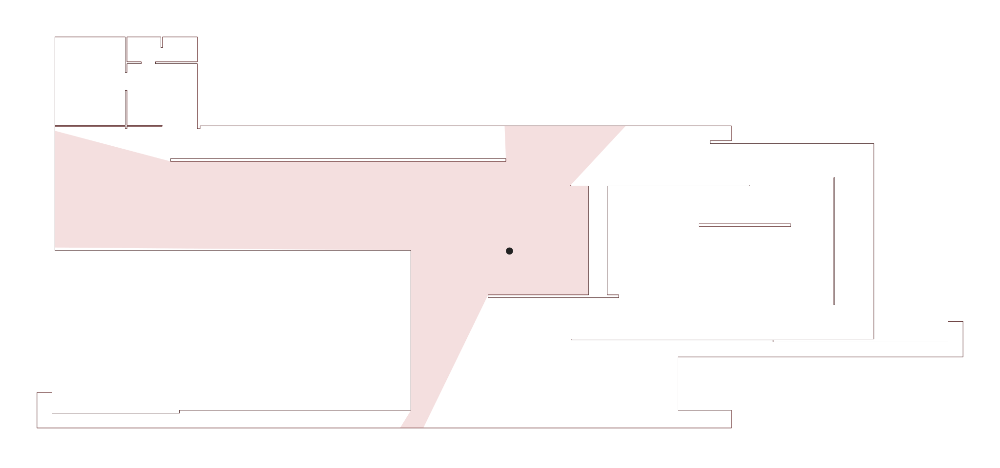
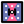
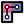

Syntaktika / Templates
Templates
Small, working Grasshopper definitions, each showing one analysis on the same example plan.
Open them from the Templates component: right-click it and choose a file.
Before you start
Common setup
Every template starts the same way. Two curve parameters and a slider feed an Environment, which every analysis then uses.
- Boundary, Obstacles
 Environment
Environment
- Boundary
- One closed curve: the outline of the plan.
- Obstacles
- Walls, columns and other elements inside the boundary. Open or closed curves.
- Precision Scaling
- Number of decimals kept by the integer geometry engine. Default
2.
To analyse your own plan, right-click each curve parameter and choose Set one Curve (boundary) or Set Multiple Curves (obstacles). In the drawings below, dark lines are the input plan and coloured elements are what the template previews.
Simple isovist
01_simple_isovist.gh

An isovist is the region of space visible from one point. The template computes the isovist of the Origin point and fills its boundary with a surface so it reads as a polygon. Deconstruct Isovist gives its measures: area, perimeter, occlusivity (the total length of occluding edges, where the view continues behind an obstacle) and compactness.
The isovist and its measures as a description of space were introduced by Michael Benedikt in To take hold of space: isovists and isovist fields (Environment and Planning B, 6(1), 47–65, 1979).
- Origin
- The viewpoint. Move it to see the isovist update.
Grid isovist
02_grid_isovist.gh

- Environment
- GridMesh

Grid Isovist Mesh Gradient
Mesh Gradient
Computing isovists everywhere turns a single measurement into a map. GridMesh fills the plan with square cells, Grid Isovist computes an isovist from the centre of every cell, and Mesh Gradient colours the grid by Isovist Area. Large, open areas stand out against secluded corners.
- Cell Size
- Grid resolution, default
0.3. Smaller cells give a finer map; time grows with the number of cells. - Values
- Try connecting Isovist Perimeter, Occlusivity or Compactness instead of area.
- Gradient Index
- Colour scheme:
0Thermal,1Turbo (default),2Viridis, and more.
Isovist thresholds
04_isovist_thresholds.gh
Thresholds are a method new to Syntaktika. Where an isovist is cut by an obstacle, its boundary has occluding edges: places where the view slips past a corner. Pairing occluding points on the left and right gives threshold lines that divide the isovist into nested regions, the partial views into the next space.
Each threshold has a depth (how deeply it is nested, starting at 1) and a potency (how strongly it closes off what lies behind it). Deconstruct Threshold Isovist also reports summary measures such as maximum visible depth, mean threshold depth and distributedness.
Environment thresholds
05_environment_thresholds.gh

One isovist's thresholds depend on where you stand. Computing thresholds from every cell of a grid and matching the ones that repeat gives environment thresholds: the thresholds of the plan itself. Each one records how many cells see it and the area of the plan it is seen from. Together they map the plan's main spatial transitions.
The template draws the valid thresholds and remaps each one's Validation Count (the number of cells that see it) to line width, so the most widely seen thresholds are drawn heaviest.
- Min and Max widths
- The line-width range the validation counts are remapped to, default
0.14–1. - Cell Size
- Default
0.3. Smaller cells mean more viewpoints, and thresholds are confirmed more reliably.
Maximal diameter
06_max_diameter.gh

The maximal diameter is the longest straight line between two corners of an isovist. It gives the dominant direction of view from a point. Maximal Diameter also returns the diameters from every corner, and with a tolerance it returns all diameters close to the longest.
- Tolerance
- Diameters whose length is within this value of the longest also count as maximal. Default
1.
Maximal diameter grid
07_grid_max_diameter.gh
Template 05, repeated for every cell of a grid. Each cell's maximal diameter is scaled down around the cell centre and drawn as a short line, which shows how the dominant view direction changes across the plan. The diameter length can also colour the grid (Max Diameter Length Gradient).
- Diameter Scaling Factor
- Length of the drawn lines relative to the full diameter. Default
0.02. - Line Width
- Display width of the lines. Default
0.02. - Cell Size
- Default
0.5.
Medial axis
11_medial_axis.gh

The medial axis is the set of points that are equally distant from two or more walls. It is the skeleton of the plan's free space. Medial Axis builds it from the Environment's segments, using a segment Voronoi diagram that it computes internally. The result is a graph of parts (lines or parabolas) and points (junctions).
Each part is classified by the pair of elements that generates it: Line–Line, Convex–Line, Convex–Convex or Concave. Deconstruct Medial Axis Part returns each part's ID, geometry, generating cells, category, region and chords.
First run: Medial Axis sets up the Python 3 engine and
pyvoronoi automatically. This needs an internet connection once, and the component
recomputes when setup is done.
- Condense Concave Parts
- Optional. Merges the parts generated around concave corners.
Axial map
12_axial_map.gh
The axial map is the classic representation of space syntax: the fewest and longest lines of sight that cross every space of a plan and connect them all. Axial Map follows the algorithm of Turner, Penn and Hillier (2005). It first draws the all-line map, every line joining two corners that see each other, extended past the corners it grazes. Then it removes every line whose connections are already covered by another one, while keeping every corner in view of some line (surveillance) and every loop around an obstacle closed.
Besides the map, the component returns each line's Connectivity (how many lines it crosses), a sparser Greedy Map, and the full all-line map.
- Greedy Map
- Connect it to the preview instead of Axial Map for a map with even fewer lines that stays connected.
- Precision Scaling
- Set to
3in this template, one decimal more than the others.
Convex map
12_convex_map.gh
- Environment
 Medial Axis
Medial Axis
Convex Map From Medial Axis
A convex map divides a plan into convex spaces, regions where every point sees every other, and connects the ones that touch. Convex Map From Medial Axis builds it from the medial axis, after Miranda Carranza and Koch (2013). Every reflex corner of the plan shapes part of the medial axis; the chords at the ends of those parts cut the plan into small convex pieces. The pieces are then joined back across the chords, widest first, as long as the joined region stays convex.
The Map output leaves out residual pieces, such as door openings as deep as the wall, and Map Edges link the centres of neighbouring regions.
- Full Ligatures Last
- Join along corner-to-wall chords before corner-to-corner bottlenecks. Off by default.
- Corners First
- Join first along the chords near convex corners, at the ends of the medial axis. Off by default.
- Concurrency Test
- Skip joins that compete with others of the same priority, instead of choosing between them arbitrarily. On by default.
- Tie Tolerance
- Chords whose circle radii differ by at most this much have the same priority. Default
1. - Min Area, Threshold Width
- Inputs on the component: regions smaller or narrower than these are left out of the map.
0keeps them all.
First run: like the medial axis template, this one sets up
pyvoronoi the first time and needs an internet connection once.